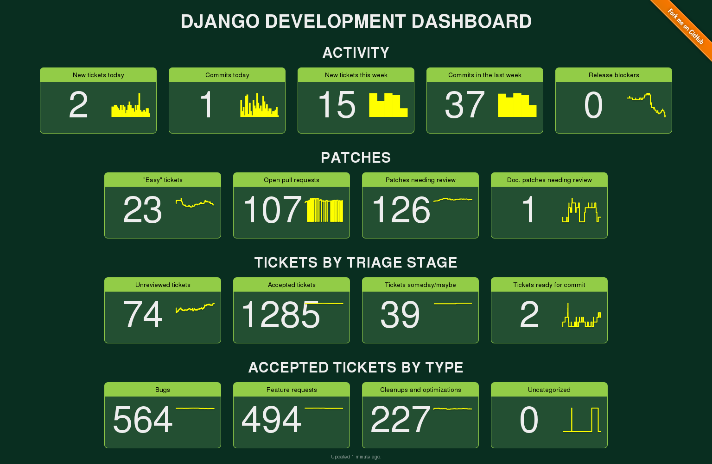

How the Sausage is Made
About me

Baptiste Mispelon
Online: bmispelon
Web developer
Django core dev since June 2013
About this talk
Three parts:
- What is Django?
- How is Django developed?
- How to contribute?
1 - What is Django?
The framework
"The web framework for perfectionists with deadlines"
- Written in Python
- Batteries included: ORM, template language, ...
- MIT license
- Supports Python 3 and 2
History
- Started in 2003 at World Online, web division of LJW (US newspaper).
- Opensourced in July 2005.
- 1.0 release in September 2008.
- Currently at 1.6, with 1.7 in beta.
The DSF
Django Software Foundation
- Created in 2008
- US-based non-profit organization
- Funded by corporate members and donations
The DSF's activity
- Holds the Django trademark
- Helps sponsor sprints, meetups, ...
- Awards (Malcolm Tredinnick memorial prize)
The core team

The core team
Core team == People with commit access.
- 44 people, 16 countries, 3 continents
- All volunteers, no one is paid
Core team's activity
Free time vary so people come and go
- Active core devs (by commit):
- this week: 9
- this month: 17
- this year: 32
Perks
- Commit access (really scary)
- Internal mailing list (not very active)
- Private repository (to work on security issues)
- Access to a private Django jet
Perks
- Commit access (really scary)
- Internal mailing list (not very active)
- Private repository (to work on security issues)
- Access to a private Django jet
- That's basically all
How to join the core team?
- Don't ask for it
- Quality contributions
- Long-term involvement
- Existing core dev submits name for approval. One week voting period. +1/-1
The community
Django's most valuable asset.
Code contributions
We have 10 times as many external contributors as core devs:
$ git log --format=%an \ | sort -u \ | wc -l 584
Ecosystem
There's a huge wealth of reusable applications:
$ pip search django \ | grep ^django- \ | wc -l 4061
Community events
Conferences all over the world:
USA, Europe, Australia, Wales, Italy, ...
There are also regular meetups everywhere.
Not to mention all Python-related events.
2 - How is Django developed?
Release process
- New release about every 6 months
- Alpha (4 months), Beta (2 months), RC (2 weeks), Final
- Micro release for bugfix/security
- Long-Term Support
- Backwards-compatibility policy
Git / Github
- Django started with Subversion but moved to Git in April 2012
- ~17 000 commits
- github.com/django/django
- No issues, no wiki
- Pull requests (2500 opened)
Trac
- Bug tracking software written in Python
- Used since the beginning of the project
- Central to the development of Django
- More than 22 000 issues
- Intimidating but powerful
- Don't use it for security reports!
Protip: the Django dashboard
https://dashboard.djangoproject.com
Pretty graphs, useful shortcuts to trac.
Django dashboard
Mailing lists
Big features are discussed on django-developers.
Someone comes with a proposal and people discuss it, gathering feedback.
The goal is to reach a consensus from which we can start building.
Other official mailing lists
- django-users
- django-core-mentorship
- django-i18n
- django-announce
- django-updates
Internationalization
Django is translated in 81 languages:
- Translation work is done on Transifex
- Anybody is welcome to contribute (you need to create an account and join a language team)
- Experimental: Translation of the documentation (French, Japanese)
Translation process
- Strings to translate are extracted and appear on Transifex
- Language teams translate them
- "String freeze" when RC is released
- When the release is packaged, translated strings are pulled from Transifex and included in the final package.
3 - How to contribute?
Help others
- Great way to get a better understanding of Django's internals
- IRC: #django on Freenode (#django-pl?)
- django-users mailing list
Try early versions
We release Alpha, Beta, and RC versions.
Test them in your own projects before they're released.
How to install a pre-release?
Use virtualenv and pip:
pip install \ https://www.djangoproject.com/\ download/1.7b1/tarball/
How to install a pre-release?
Use virtualenv and pip:
pip install -e \ git+https://github.com/\ django/django.git@1.7b1
How to install a pre-release?
Use virtualenv and pip:
pip install --pre Django==1.7b1
(soon)
Report bugs
Sooner or later, you'll find a bug:
- Typo ⇒ pull request
- Anything more complex ⇒ new ticket on Trac
- Don't report security issues on Trac!
A good ticket
Reproducability is key:
- Show us your code + steps
- Show tracebacks
- Give information about your platform (OS, libs, ...)
- Reduce the scope
Triage
There's about 5-10 new tickets opened every day.
Anybody can help out, not just core devs.
What to do on Trac?
- Process unreviewed tickets (accept, reject)
- Make sure old bugs are still present
- Review patches/pull requests
Contribute code and docs
- Write fixes for existing tickets
- Write documentation
- Improve existing patches (add missing tests, docs, ...)
Write libraries
Django's strength is also the huge amount of libraries written for it.
Promote quality: tests, documentation, Python 3 support, ...
Blog
Not everything has its place in the documentation.
Some things are better left for the community to document.
Why not write your own blog engine with Django?
Attend events
Meet the community, become part of it.
Learn about cool new stuff.
Make friends!
Level up
Can't find an event you'd like to attend?
Why not organize your own?
You won't get to sleep for days, but you'll learn a ton and it'll give you a new perspective.
Something for everyone
- International conferences
- Meetup
- Sprints
Conclusion
Django is a community project.
We want openness and transparency.
Anything else is a bug.
Help us fix it!
Dziękuję!
Bonus: my merge workflow
wget https://github.com/\ django/django/pull/XXXX.patch git apply XXXX.patch PYTHONPATH=. python tests/runtests.py git checkout -- django/ PYTHONPATH=. python tests/runtests.py git checkout -- . git am XXXX.patch git push # Close PR.
Links
Django's site: 'https://www.djangoproject.com The code: https://github.com/django/django DSF: https://www.djangoproject.com/foundation/ Contributing: https://docs.djangoproject.com/en/dev/internals/contributing/ Contributing (not specific to Django): https://dont-be-afraid-to-commit.readthedocs.org/en/latest/contributing.html Django dashboard: https://dashboard.djangoproject.com Continuous integration (with coverage): https://ci.djangoproject.com Translation: https://www.transifex.com/projects/p/django-core/